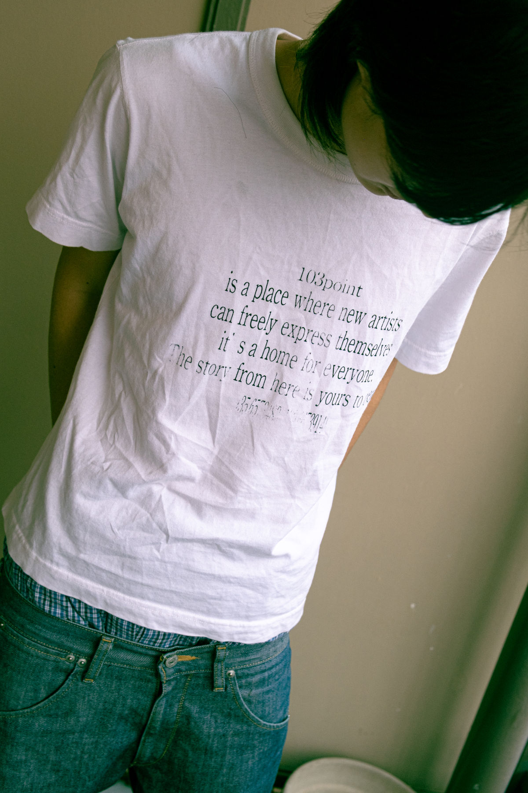

五感を開いたまま、まだ名前のないカルチャーに立ち会うための試み。

Concept
感拡（かんかく）は、ファッション・音楽・映像・グラフィック・空間表現などを横断する、独立したクリエイティブプロジェクトである。 SNSやストリーミングサービスの普及によって、表現の発信とアクセスは容易になった。一方で、情報の過剰な流通は作品の希少性を薄め、カルチャーを短期的な消費へと変化させている。 アーティストは商業性と独自性の間で立ち位置を模索し、オンラインと現場のコミュニティは分断されていく。オーディエンスもまた、作品を消費することに慣れ、現場に足を運び、カルチャーを実体験する機会や意識が希薄になりつつある。 感拡は、アーティストとオーディエンス、オンラインとリアルの境界を再接続することを試みる。単に作品を発信し、消費される関係ではなく、プロダクトやイベント、クリエイティブを通じて、新たな接点と体験を生み出す。 ただし、場を用意するだけでは人は現場に来ない。画面で済むものを現場でもう一度なぞるなら、行く理由がないからだ。 自分たちが向き合いたいカルチャーは、まだ名前がついていない。誰にも定義されていない。だからこそ、そこに立ち会うことに意味がある。 音楽を、鑑賞するだけの体験で終わらせたくない。演者と客の境界を必要以上に引かず、近い距離で音を浴びる。その場の空気ごと、身体で受け止める。 感拡は「感覚拡張」の略である。五感を開いたまま、まだ名前のないカルチャーに立ち会うための試み。
vol.1「起工」は工事現場を会場として想定している。フライヤーに出てくる看板とコーンは、実在の現場を撮影したものではなく Blender でモデリングした。まだ存在していない会場だから、素材も建てるところから始めた。
ステッカーには、感覚を拡張したピクトグラムをつくった。工事現場の標識と同じ記号の作り方をしながら、注意や禁止ではなく、その場で起きていることを表している。
服は 103point というブランドのデザインで、これも立ち上げを想定したものである。名前は、周りのコレクティブのメンバーが集まる場所から取った。人が実際に集まっている場所の名前を、そのままブランド名にしている。デザインはシルクスクリーンで一枚ずつ刷った。データを配って量産するのではなく、手で刷って物として渡す。
出演者だけは、実際に足を運んで決めている。ストリーミングで聴いた印象と、その場で浴びたときの印象は違う。生で聴いたときに、録音では分からなかったものがあった人を選んでいる。この企画が言っていることを、出演者の選び方でも実行している。 フライヤーに出ている BlueLotus は自分のラッパー名である。